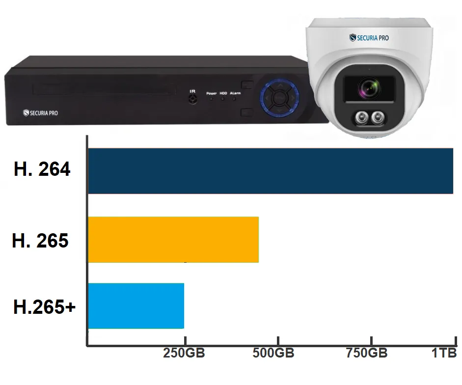
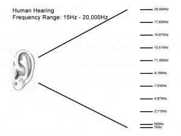

Informatika je interdisciplinárny odbor, ktorý sa zaoberá štúdiom informácií a výpočtov. Zahrňuje širokú škálu tém od teórie algoritmov a analýzy dát, cez vývoj softvéru a počítačových systémov, až po umelú inteligenciu a kybernetickú bezpečnosť.
Informatika má veľký význam v modernom svete, pretože počítačové technológie sú neoddeliteľnou súčasťou nášho každodenného života. Počítače a softvér ovplyvňujú prakticky všetky oblasti, od zdravotníctva a vzdelávania, cez priemysel a obchod, až po zábavu a komunikáciu.
V rámci štúdia informatiky sa študenti oboznamujú s rôznymi programovacími jazykmi, databázovými systémami, sieťovými technológiami a mnohými ďalšími oblasťami. Získavajú zručnosti, ktoré im umožňujú riešiť komplexné problémy, navrhovať a implementovať efektívne riešenia a prispievať k technologickému pokroku.
Videotechnika alebo video je technika na zachytávanie, záznam, prehrávanie, prenos a obnovu pohyblivých obrázkov používajúca elektronické signály alebo digitálne médiá. Spája sa predovšetkým s televíznou výrobou.
Softvér pre prácu s videom
Existuje mnoho softvérových nástrojov pre digitálne video, ktoré umožňujú editovať, konvertovať a spracovávať videá. Medzi najpopulárnejšie patria Adobe Premiere, Final Cut Pro, DaVinci Resolve a Sony Vegas. Tieto programy poskytujú širokú škálu nástrojov na úpravu videa, vrátane strihania, pridávania efektov, farieb a zvuku.
Analogové video je forma záznamu, ktorá používa analogové signály na zaznamenávanie a prehrávanie obrazu. Tento formát bol štandardom pred vznikom digitálneho videa a stále sa v niektorých aplikáciách používa.
Princíp fungovania analogového videa
V analógovom videu je obraz zaznamenaný ako spojitý signál, ktorý reprezentuje intenzitu farby a jasu v každom okamihu času. Tento signál sa potom prenáša na záznamové médium, ako je magnetická páska alebo VHS kazeta, a neskôr sa môže prehrávať pomocou analógových zariadení, ako sú televízory alebo VCR prehrávače.
Výhody a nevýhody analógového videa
Výhody:
1. Jednoduchosť technológie a zariadení.
2. Stabilita a odolnosť voči niektorým druhom interferencií.
Nevýhody:
1. Nižšia kvalita obrazu v porovnaní s digitálnym videom.
2. Náchylnosť na šum a rušenie.
3. Straty kvality pri kopírovaní a prenose signálu.

Spôsoby kompresie sú techniky používané na zmenšenie veľkosti videa alebo zvuku bez výrazného poklesu kvality. Tieto techniky sú dôležité pri prenose a ukladaní digitálnych médií.
Typy kompresie
Existujú rôzne spôsoby kompresie pre video aj zvuk. Pre video sa často používajú štandardy ako H.264 alebo H.265, ktoré používajú rôzne techniky na redukciu redundancie informácií a optimalizáciu prenášaného dátového toku. Kompresia videa sa vykonáva prostredníctvom video kodeku, ktorý pracuje na jednom alebo viacerých kompresných algoritmoch. Kompresia videa sa zvyčajne vykonáva odstránením opakujúcich sa obrázkov, zvukov a / alebo scén z videa. Napríklad video môže mať rovnaké pozadie, obrázok alebo zvuk niekoľkokrát prehraté alebo údaje zobrazené / pripojené k video súboru nie sú také dôležité. Kompresia videa odstráni všetky takéto údaje, aby sa zmenšila veľkosť video súboru.
Digitálne video je formát záznamu a prehrávania obrazu, ktorý používa digitálne signály. Tento formát ponúka vyššiu kvalitu obrazu a je menej náchylný na rušenie a straty kvality pri prenose alebo kopírovaní.Ide vlastne o postupné zobrazovanie snímkov, ich počet za sekundu (keď sa zjaví pred ľudským okom nejaký obrázok, trvá niekoľko milisekúnd, kým si ho stačíme uvedomiť. Ak sa sekvencia obrázkov vykresľuje rýchlo za sebou, oko nedokáže vidieť každý obrázok individuálne – túto skutočnosť využívajú všetky videosystémy), rozlíšenie a požadovaný dátový tok, ktorý sa mení v závislosti na norme a formáte (komprimácii). Snímky sú poskladané z pixlov v dvojrozmernom poli, kde každý pixel reprezentuje úroveň intenzity alebo farby. Pri čierno-bielom obrázku nám pre každý pixel stačí 1 bit (1 bit = 2 farby). Gray-scale obrázky (odtiene 256 farieb šedej) potrebujú 8 bitov na pixel. Truecolor obrázky potrebujú 8 bitov na reprezentáciu z každej farby RGB modelu, tj. spolu 24 bitov na pixel. Najväčším problémom digitálneho videa sú teda jeho kapacitné nároky – 1 sekunda „čistého“ videa v plnom rozlíšení normy PAL (predpokladáme že všetky body a farby sú na TV zobrazované ) - dostaneme 720x576 bodov s 25 snímkami za sekundu x 24 bitové farby, teda máme asi 40 MB na sekundu videa, tj. 210 GB pre 1,5 hodinový film.
Zvuk je forma energie, ktorá vzniká kmitaním telies, napríklad chvením hlasiviek alebo blany bubna. Keď sa zvuk šíri nejakým prostredím, napríklad vzduchom, jeho molekuly kmitajú a navzájom sa zrážajú, čím si odovzdávajú energiu. Vo vákuu sa zvuk nešíri. V informatike sa zvuk často digitalizuje a spracováva pre rôzne aplikácie, vrátane hudby, filmov a telekomunikácií.

Výška tónu závisí od jeho frekvencie. Frekvencia sa meria v hertzoch (Hz); 1 Hz je jeden kmit za sekundu. Najnižší zvuk, ktorý väčšina ľudí dokáže zachytiť má frekvenciu okolo 40 Hz, najvyšší má frekvenciu okolo 20 000 Hz. Bežná muzika sa pohybuje okolo 11 500 Hz.
Rýchlosť zvuku je fyzikálna vlastnosť, ktorá určuje, ako rýchlo sa zvuk šíri určitým prostredím. Táto vlastnosť má významné uplatnenie v rôznych odvetviach, vrátane akustiky, komunikácií a vedy o zvuku.
Fyzikálne aspekty rýchlosti zvuku
Rýchlosť zvuku závisí od vlastností prostredia, cez ktoré sa šíri, ako aj od teploty a vlhkosti vzduchu. Zvuk sa šíri vo vzduchu rýchlosťou 330 m/s. Je to oveľa menej ako rýchlosť svetla, preto počas búrky vidno najskôr blesk a zahrmenie počuť neskôr. Podľa času, ktorý uplynie medzi zábleskom a zahrmením, možno určiť vzdialenosť búrky: je to asi 1 km na každé 3 namerané sekundy.
Kompresia zvuku je proces znižovania veľkosti zvukového súboru odstránením nadbytočných dát. Tento proces umožňuje efektívnejšie ukladanie a prenos zvuku bez výrazného zníženia jeho kvality.